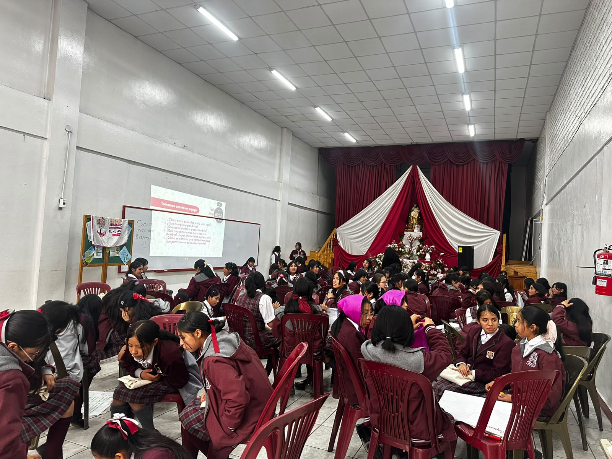
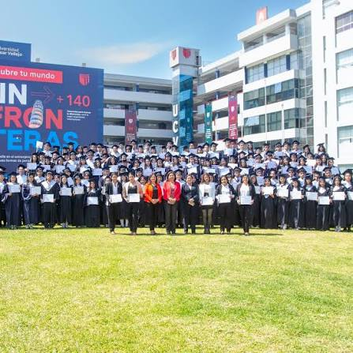

About me
Technology for people, and the planet.
I’m a software development student and the founder of Nexa Global Impact, building accessible digital solutions for underserved communities, grassroots organizations and animal shelters. I believe technology and AI can help societies anticipate and recover from climate-related threats.
My work brings together AI for climate, disaster risk reduction, digital inclusion, youth leadership and STEM education.
AI for ClimateSoftware DevelopmentDisaster Risk ReductionSocial InnovationMentoring

All my orbits
The interests, values and causes that shape the way I build technology and lead.
AI for ClimateDisaster ResilienceDigital InclusionAccessibilityYouth LeadershipSTEM EducationMentorshipSocial Innovation
Selected work
Projects that orbit impact

AI Early-Warning Framework
Computer vision with NASA Earthdata and Copernicus imagery · GAUC
Eco Warmi
Climate education for adolescents in vulnerable schools across Lima
TechHer Revolution
AI and NASA open-data keynotes for girls aged 13–17 · Australian Embassy
School of Leaders
Virtual STEM education reaching 1000+ children across Peru · Leadership AwardGallery
Moments & missions
Journey
Missions & experience
May 2026 – Present · Lima
Founder & Project Lead
Nexa Global Impact
Building accessible digital solutions for underserved communities, shelters and grassroots organizations worldwide.
Oct 2026 – Present · Remote
Section Leader
Stanford University · Code in Place
Mentoring international students in Python, leading weekly sections and reviewing assignments.
Sep 2026 – Present · Hiroshima
UNITAR Leadership Fellow
Women’s Leadership in Disaster Risk Reduction
One of 500 participants worldwide, developing DRR frameworks aligned with the Sendai Framework.
Sep 2026 – Present · Tokyo
Selected Participant
GCI World 2026 · U-Tokyo Matsuo-Iwasawa Lab
Hands-on data science and machine learning with Python, SQL and time series analysis.
Aug 2026 – Present · Remote
Climate x Scholar
Global Alliance of Universities on Climate
Developing an AI-driven early-warning framework for vulnerable communities.
Jul 2026 – Present · Toronto
Research Trainee
Climate Change AI Summer School
Applying machine learning to environmental data and sustainable technologies.
Honors
Awards & recognition
Aug 2025 · ISIL
Top Graduate
Class representative, with the highest GPA across all programs of the institution.
Aug 2025 · ISIL
Academic Excellence Award
Highest performance in Software Development, GPA 19.60/20.
2026 · Aspire Institute
Aspire Leaders Program
Graduated with a perfect 100/100 and advanced to the Extended Leadership phase.
2021 · Universidad César Vallejo
Outstanding Leadership Award
STEM Educational Project that reached 1000+ children and adolescents.
Dec 2021
Valedictorian
First place in the graduating class, I.E.M. N° 72 San Martín de Porres.
2026 · UNITAR
Global Selection
Chosen among thousands of applicants as one of 500 fellows worldwide.
Education
Apr 2026 – Dec 2026
Aspire Leaders & Extended Leadership
Aspire Institute
Leadership curriculum by Harvard Business School faculty, now focused on social entrepreneurship and scaling Nexa Global Impact.
2022 – 2025
Technical Degree in Software Development
ISIL Aprende Haciendo
Ranked first in the program with a GPA of 19.60/20.
Leadership & volunteering
Oct 2024 – Present
Tech Speaker & Project Area Member
Kusisqa Perú
Keynotes on AI and NASA Earth data, Eco Warmi project lead, and youth advocate for women in STEM.
Jul 2026 – Present · Peru
Campus Lead
Aspire Institute
Driving outreach and mentoring first-generation applicants to the Aspire Leaders Program.
Voices
What people say
Tuve el placer de organizar un evento en línea para GAUC con Gianna. Colaboró conmigo excepcionalmente bien y realizó una excelente presentación sobre cómo utilizar la inteligencia artificial y los datos satelitales de NASA para predecir futuros cambios climáticos y patrones meteorológicos, así como su impacto general. Sus aportes fueron tanto informativos como inspiradores. Recomiendo ampliamente a Gianna para futuros trabajos y colaboraciones.
H
Hawaesha
BBA Marketing · HPAIR Selected · Aspire Leadership · Climate X Leadership
Oct 18, 2026 · Trabajamos juntas en el mismo equipo
Trabajar con Gianna significa trabajar con alguien que combina sólidas habilidades técnicas con una actitud proactiva. Cualquier equipo tendría suerte de contar con ella para desarrollar soluciones digitales con un propósito significativo.
SF
Shiza Fatima
Business Development @ InventStarts · React Native Developer · UI/UX & Figma Designer
¡Muchas gracias Gianna! Tu guía como mentora en LALA fue de mucha ayuda. Tus preguntas fueron muy buenas y me hicieron preguntarme cosas que hace mucho no pensaba o me detenía a explorar 🫶🏼🫶🏼
MS
Myrahis Sanluis Cerezo
LALA · Latin American Leadership Academy
Your next testimonial will go here. Replace this text with a real comment once you receive it.
?
Your next testimonial
Role / Organization
Date · How we worked together
Your next testimonial will go here. Replace this text with a real comment once you receive it.
?
Your next testimonial
Role / Organization
Date · How we worked together
Your next testimonial will go here. Replace this text with a real comment once you receive it.
?
Your next testimonial
Role / Organization
Date · How we worked together
Your next testimonial will go here. Replace this text with a real comment once you receive it.
?
Your next testimonial
Role / Organization
Date · How we worked together
Your next testimonial will go here. Replace this text with a real comment once you receive it.
?
Your next testimonial
Role / Organization
Date · How we worked together
Your next testimonial will go here. Replace this text with a real comment once you receive it.
?
Your next testimonial
Role / Organization
Date · How we worked together
Your next testimonial will go here. Replace this text with a real comment once you receive it.
?
Your next testimonial
Role / Organization
Date · How we worked together